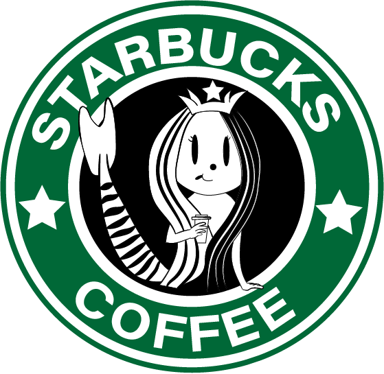
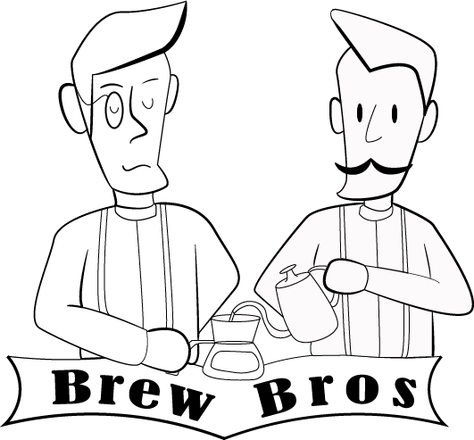

PACIFIC COFFEE
You can told that the style of the cartoon in the logo are kind of old school. As Pacific Coffee is a brand from the 90s in America, I want to recreate a retro cartoon style which fit the brand style.

STARBUCKS
The original one is a mermaid with a crown in a realistic style. My idea is turn it into a cute version, this can be making into different merchandise and may attract more customer to buy due to the cartoon style.

BREW BROS
To fit the brand's name, simply two gentlemen brewing coffee are already suitable and able to emphasize the brand name where customers are able to recognize the brand while the logo comes insight.